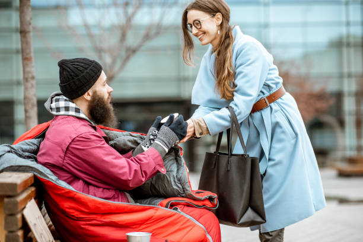
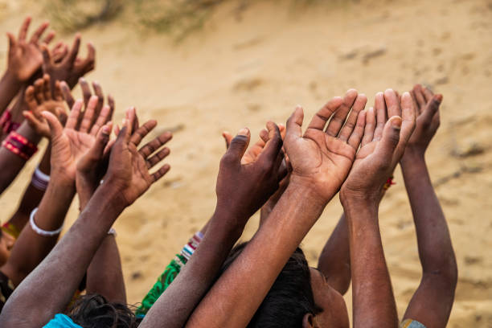
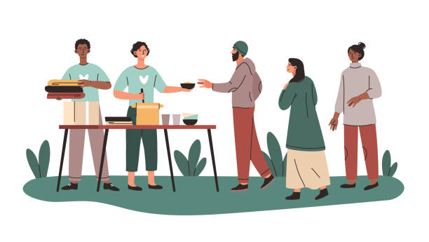
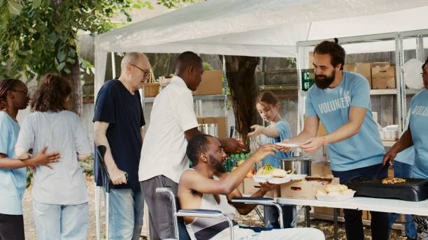

Target
To empower individuaSls and communities to overcome adversity and achieve their full potential through comprehensive support, education, and advocacy."
This vision statement encapsulates the NGO's commitment to:
Empowerment: The organization aims to equip individuals and communities with the tools and resources they need to improve their lives and circumstances.
Overcoming adversity: The NGO recognizes the challenges faced by the needy and less privileged and seeks to provide the necessary support to help them overcome these obstacles.
Achieving full potential: The organization believes that every individual has the potential to succeed and strives to create opportunities for personal and community growth.
Comprehensive support: The NGO will offer a wide range of services, including education, healthcare, economic assistance, and social support, to address the diverse needs of its beneficiaries.
Advocacy: The organization will actively advocate for policies and initiatives that promote social justice and equality, ensuring that the needs of the marginalized are addressed at a systemic level.

Read Me
To empower the marginalized and disadvantaged": This clearly states the NGO's primary goal of uplifting those who are often overlooked or excluded from society.
through comprehensive programs": This indicates that the NGO will implement a variety of initiatives to address the needs of its beneficiaries.
that address their immediate needs": This suggests that the NGO will provide essential services such as food, shelter, healthcare, and education to meet the basic needs of the disadvantaged.
promote self-sufficiency": This emphasizes the NGO's commitment to helping individuals and communities develop the skills and resources to become independent.
and foster sustainable development": This highlights the NGO's focus on long-term solutions that will improve the quality of life for future generations.

Look
Are you passionate about making a positive impact on the lives of those in need? Do you have a desire to contribute your time, skills, and energy to a cause that truly matters? If so, we invite you to join our NGO as a dedicated volunteer.
Our organization is committed to providing essential support and services to the needy and less privileged in our community. We strive to address pressing issues such as poverty, hunger, homelessness, and lack of education. Your involvement as a volunteer will play a crucial role in helping us achieve our mission.

Be a part
Education, Food, Empowerment, Employment, healthcare
